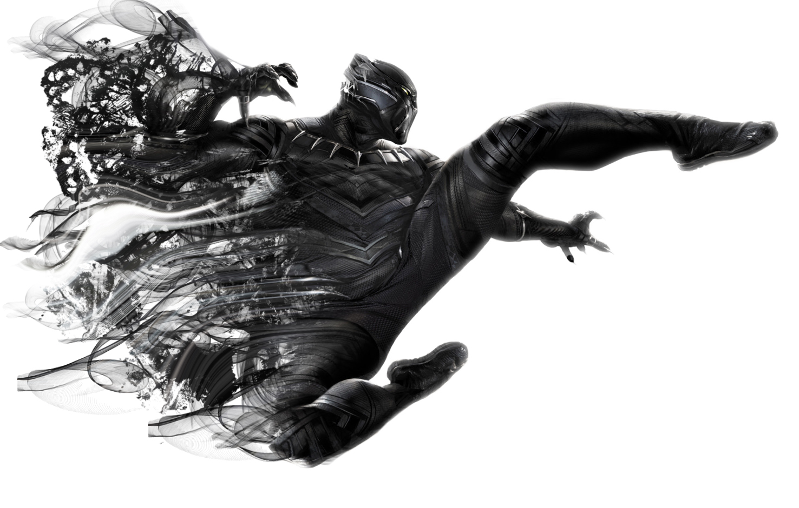
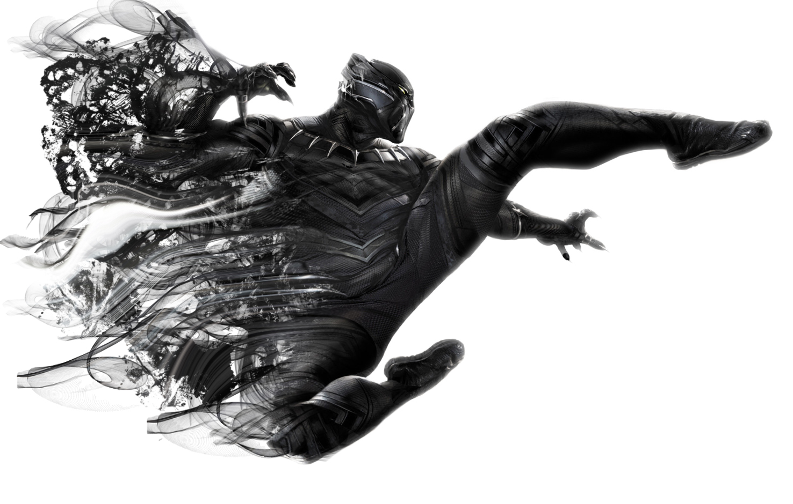
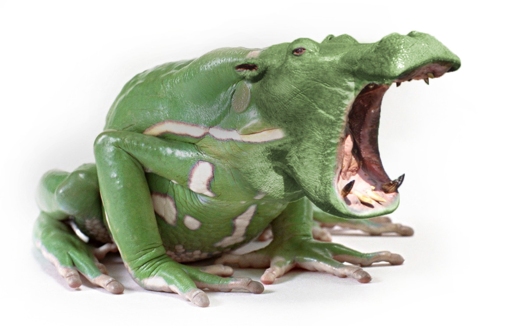
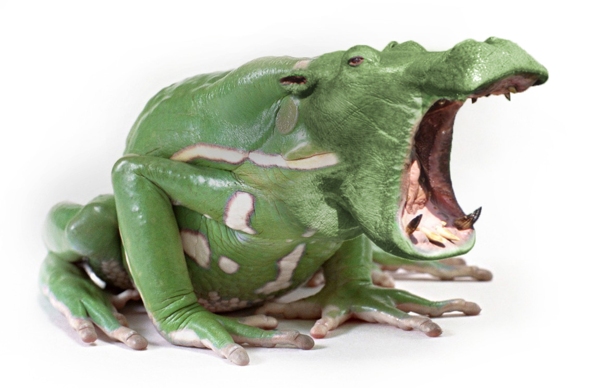
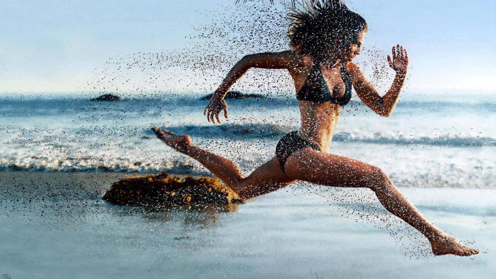
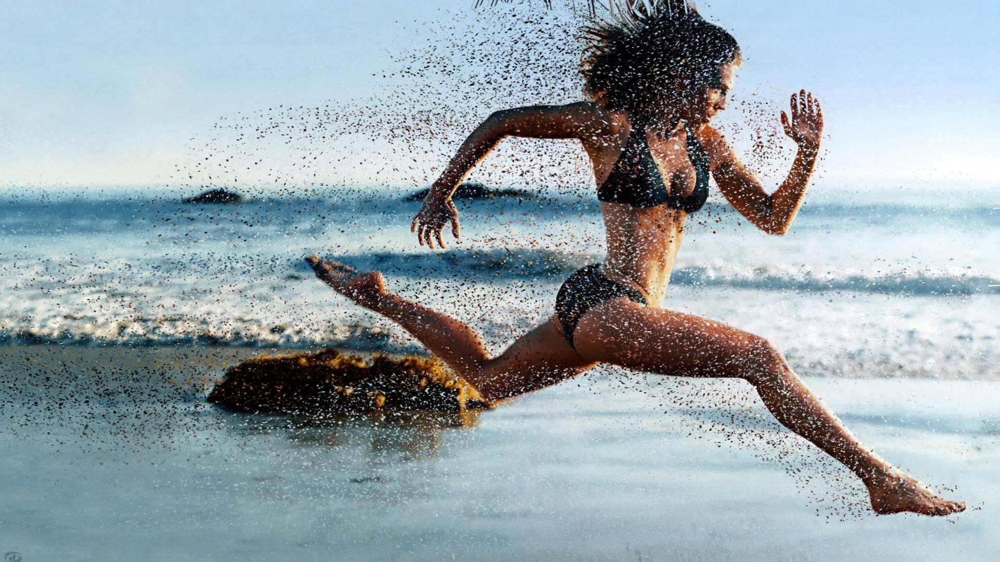
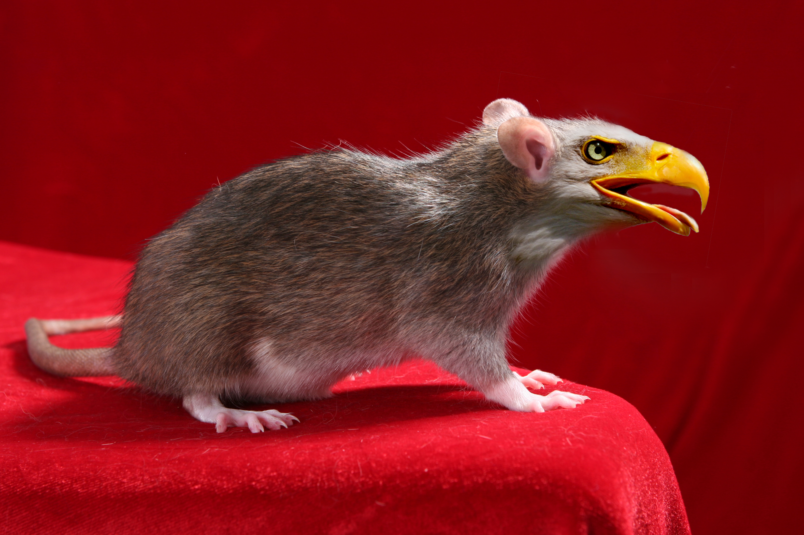
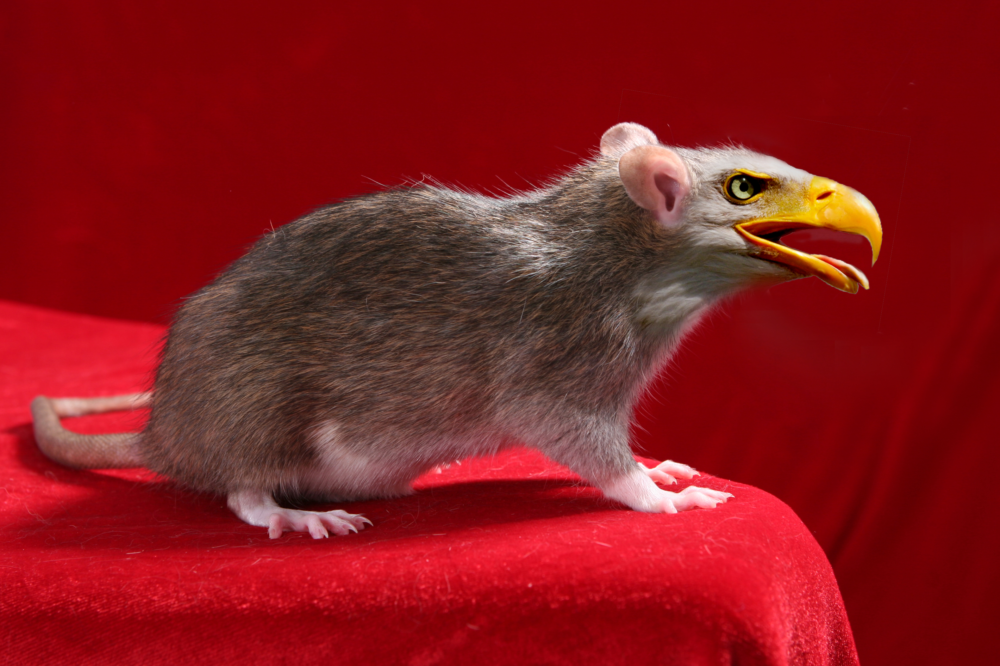

Ik ben 19 jaar, ik studeer grafische en digitale media. Mijn hobbies zijn lopen, fietsen en fitness. Voordat ik fitness deed, was ik 10 jaar lang een klasieke jazz danser. Ik hou van eten, ik kan alles eten wat ik wil en kom niet bij (dit speelt in mijn voordeel). Ik streef niet naar perfectie zoals anderen, ik weet dat deze niet bestaat dus zou geen overbodige moeite doen om deze te bereiken. Dit wilt wel niet zeggen dat ik geen tijd in iets steek of dat ik nooit een afgewerkt iets aflever, in tegendeel zelf. Ik ga nauwkeurig te werk. Begin ik aan iets en blijkt het later een flop te zijn dan werk ik 3 keer zo hard om toch op tijd klaar te zijn met iets anders op dezelfde detline. Ik heb dysorthografie en dyslexie, deze werden bij mij in het 2de leerjaar vastgesteld. Schrijven zonder fouten in teksten is daardoor een uitdaging voor mij. Deze loop ik echter niet uit de weg. Ik ben een harde en een enthousiaste werker.


 


 



 

 
